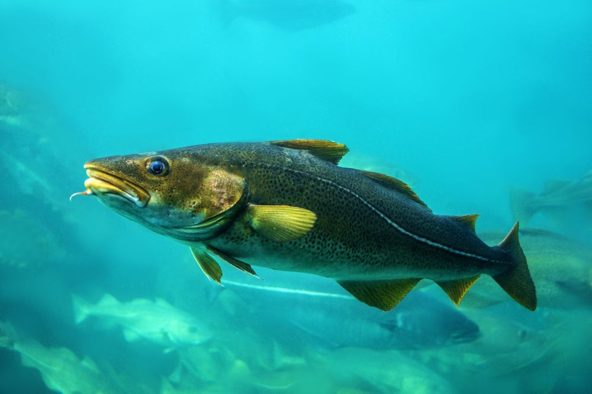
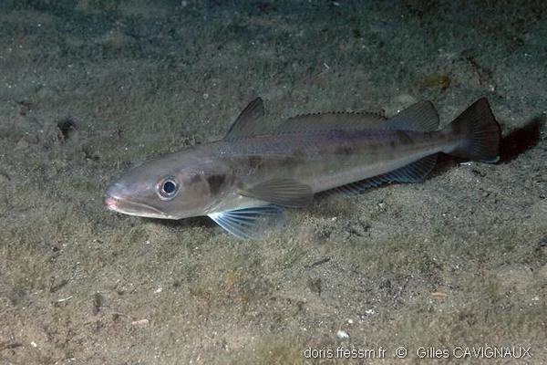
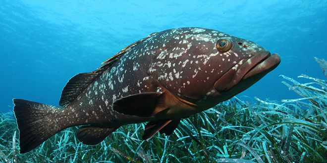

|
Thon rouge |
Atlantique, Méditerranée |
Élevé |
En danger |
Victime de la pêche industrielle |
Prédateur au sommet de la chaîne alimentaire |
|  |
Cabillaud (Morue) |
Atlantique Nord |
Moyen |
Vulnérable |
Stocks historiquement surexploités |
Contrôle les populations de petits poissons |
|  |
Merlu |
Atlantique Nord-Est, Méditerranée |
Élevé |
Quasi menacé |
Pêché souvent avant maturité sexuelle |
Régule les populations de crustacés |
|  |
Mérou brun |
Méditerranée |
Élevé |
En danger |
Espèce lente à croître, facilement surexploitée |
Maintient l'équilibre des récifs rocheux |